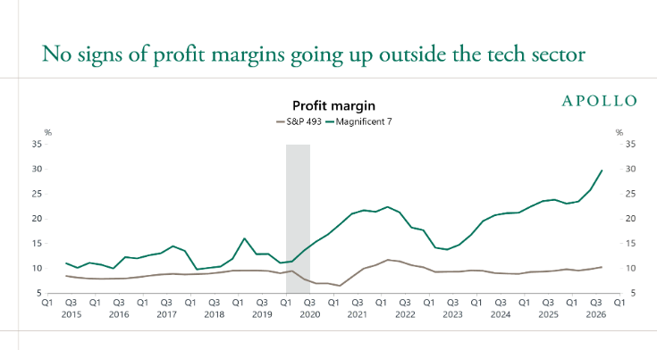
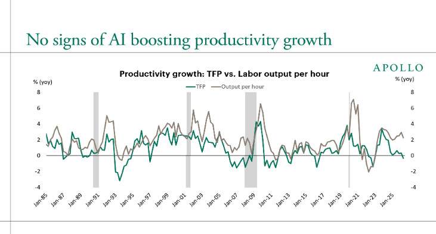

Publié le 30/10/2026
"The AI story will be decided in the S&P 493, not the Mag 7."
— Torsten Slok, économiste en chef d'Apollo
Le 24 octobre, Torsten Slok, économiste en chef chez Apollo, a publié une note au titre qui a le mérite d'être clair : pas de signe que l'IA rapporte quoi que ce soit en dehors de la tech. Cinq graphiques, quelques paragraphes, et un constat qui pique un peu quand on commence tout juste à faire bosser des agents à sa place.
Petit rappel des faits. D'un côté, les « Magnificent 7 », les sept mastodontes de la tech américaine, voient leur chiffre d'affaires par salarié et leurs marges grimper. De l'autre, les 493 autres entreprises du S&P 500 — les banques, les assureurs, les distributeurs, les industriels, bref, l'économie dite « normale » — font du surplace. Et la productivité, elle, ne bouge pas d'un iota.

Source : Torsten Slok, « No Signs of AI Payoff Outside the Tech Sector », Apollo, 24 octobre 2026.
Je dois vous faire une confession. Entre 2022 et 2024, j'avais les mains dans la terre : je plantais des arbres et je passais un BTS en production horticole. Autant vous dire que l'arrivée de ChatGPT et consorts, je l'ai regardée de loin, entre deux haies bocagères. Je me suis dit que c'était un peu comme la blockchain et les cryptos : beaucoup de bruit, quelques fortunes, et au final pas grand-chose de changé dans la vraie vie. Erreur. Quelques essais personnels, un peu de recul, et un récent licenciement plus tard, je commence à comprendre que c'est probablement quelque chose de beaucoup plus costaud. Plus épais. Le genre de truc qui ne repart pas avec la marée.
Moi, quelque part entre deux haies, pendant que ChatGPT débarquait.
Je ne vais pas vous dire si Slok a raison ou tort. Honnêtement, je n'en sais rien. Mais la question mérite qu'on s'y arrête deux minutes. Restez avec moi.
L'argument de Slok tient en trois temps. Un, les dépenses en IA (et notamment en tokens) sont ultra-concentrées : quelques boîtes de la tech et des startups biberonnées au capital-risque consomment l'essentiel. Deux, l'entreprise « classique » n'a pas besoin du dernier modèle à la mode et n'a pas envie de le payer ; elle commence même à voir cette ligne de dépense comme un centre de coût qui rogne ses marges. Trois, et c'est là que ça devient intéressant : même si l'intelligence devient quasi gratuite, rien ne garantit qu'elle se transforme en croissance. Parce qu'en entreprise, l'intelligence, c'est surtout du jugement. Et le jugement, ça repose sur du contexte, de la confiance, de la responsabilité, des règles non écrites. Des trucs qui ne se tokenisent pas si facilement.
On imagine assez bien la scène au prochain codir :
Cela dit, je me méfie toujours un peu des constats trop nets.
D'abord, il y a un vieux classique de l'économie : à la fin des années 80, Robert Solow s'étonnait déjà de voir des ordinateurs partout, sauf dans les statistiques de productivité. Il a fallu attendre une bonne dizaine d'années pour que les gains apparaissent. Le temps que les organisations se réorganisent, que les process changent, que les gens apprennent. Une technologie, ça se plante comme une haie : les premières années, on a surtout des piquets et du paillage. Ça ne veut pas dire que rien ne pousse.

Source : Torsten Slok, « No Signs of AI Payoff Outside the Tech Sector », Apollo, 24 octobre 2026.
Ensuite, les données ont leurs limites. Une partie des chiffres sur la dépense IA vient des clients d'une seule fintech, Ramp. Et comparer des agrégats ne permet pas d'isoler l'effet propre de l'IA de tout le reste : taux d'intérêt, droits de douane, cycle économique. Vous l'aurez compris, on peut faire dire beaucoup de choses à cinq graphiques. Dans un sens comme dans l'autre.
Enfin, les fournisseurs d'IA racontent une autre histoire. Le prospectus d'introduction en bourse d'Anthropic, publié il y a quelques jours, revendique près de 12 000 clients qui dépensent plus de 100 000 dollars par an. Ce ne sont pas que des startups de la Silicon Valley. Mais dépenser n'est pas encaisser, et c'est précisément la nuance de Slok : on peut très bien voir les vendeurs de pelles faire fortune bien avant que les chercheurs d'or ne trouvent quoi que ce soit.
Source : National Archives (États-Unis).
Ces deux lectures ne s'excluent pas forcément. Il est tout à fait possible que l'IA soit déjà massivement utilisée, qu'elle fasse gagner du temps à des millions de gens, et que ça ne se voie pas encore dans les comptes. Le temps gagné peut être réinvesti ailleurs, absorbé par de nouvelles tâches, ou simplement pas mesuré.
Côté produit, j'ai appris une chose : ce qui compte, ce n'est pas qu'un outil soit déployé, c'est qu'il y ait un truc en prod utilisé par au moins une personne, et que ça change quelque chose pour elle. Appliquée à l'IA, la question devient : est-ce que les 493 changent vraiment leur façon de travailler, ou est-ce qu'ils ont juste ajouté un abonnement de plus à la liste ?
Parce qu'au fond, les graphiques de Slok ne mesurent pas des machines, ils mesurent des gens. Et côté gens, c'est un joyeux micmac.
Il y a ceux qui essayent. Ils bricolent, se plantent, recommencent, gardent ce qui marche. Pas forcément les plus bruyants, mais probablement ceux qui apprennent le plus vite.
Il y a ceux qui pensent avoir tout compris. Trois prompts, un post LinkedIn, et les voilà experts. Ils ont parfois raison sur le fond, souvent tort sur la vitesse, et quasiment toujours sur le ton.
Il y a ceux pour qui c'est inaccessible. Trop technique, trop rapide, trop flou. Pas par mauvaise volonté : personne ne leur a montré, et personne n'a pris le temps.
Il y a ceux qui veulent juste faire du pognon. Formations miracles, agents qui « remplacent dix salariés », side business clé en main. Une ruée vers l'or classique, avec son lot de vendeurs de cartes au trésor.
Et puis il y a, dans certains pays — et la France n'est pas la dernière à ce petit jeu —, ceux qui rejettent en bloc, sans avoir testé. Par principe, par méfiance, par habitude de voir chaque « révolution » finir en bullshit-bingo. On pourrait s'en moquer, mais soyons honnêtes : ce réflexe a parfois évité de belles bêtises. Le problème, c'est quand la méfiance remplace la curiosité au lieu de l'accompagner.
Bien sûr, personne ne rentre proprement dans une seule case. On peut être enthousiaste le lundi, sceptique le mercredi et largué le vendredi. Moi le premier. Mais tant que ce mélange-là n'aura pas trouvé un semblant d'équilibre dans les équipes, je ne suis pas sûr qu'on doive s'étonner de ne rien voir bouger dans les comptes des 493.
Petit pas de côté. Encore une fois, on regarde le sujet par un seul bout de la lorgnette : l'argent. Chiffre d'affaires par salarié, marges, productivité. Comme si la seule question qui vaille était « combien ça rapporte ? ».
Pendant ce temps, il se passe des choses assez vertigineuses du côté des mathématiques. En mai, un modèle d'OpenAI a réfuté une conjecture de Paul Erdős vieille de 80 ans, sur les distances dans le plan ; le résultat a été vérifié par des mathématiciens extérieurs, dont le médaillé Fields Tim Gowers. Puis, le 8 septembre, OpenAI a annoncé avoir résolu le problème de Navier-Stokes, l'un des sept problèmes du prix du Millénaire, celui qui décrit comment les fluides s'écoulent. Environ 10 000 agents, 88 heures de calcul, une preuve formalisée. L'institut Clay ne l'a pas encore validée, et deux chercheurs qui travaillaient sur la même piste revendiquent l'antériorité. Mais quand même.
Côté chercheurs, c'est l'affolement. Certains parlent de deuil. Vingt-cinq médaillés Fields, dont Terence Tao et Cédric Villani, ont signé une déclaration pour alerter sur le décalage entre les objectifs des labos d'IA et ceux des mathématiciens : résoudre vite n'est pas comprendre. D'autres appellent au calme et rappellent qu'avec des milliards investis, une équipe humaine bien financée aurait peut-être fait pareil. Et pendant ce temps-là, OpenAI ouvre gratuitement ses modèles à 100 000 chercheurs d'ici 2027, avec l'ENS parmi les premiers servis. Philanthropie, stratégie, un peu des deux ? Je vous laisse juge.
Ce qui me frappe, moi, c'est autre chose. Depuis toujours, on regarde le ciel, la mer, une feuille qui tombe, et on essaye de comprendre. Les maths et la physique sont nos meilleurs outils pour ça, et aussi les plus humiliants : ils nous rappellent à quel point on est petits, précaires, de passage. Si ces machines nous aident à comprendre un peu mieux le cosmos et la place minuscule qu'on y occupe, le gain n'apparaîtra dans aucun graphique d'Apollo. Ça ne veut pas dire qu'il n'existe pas.
À l'inverse, on peut aussi se demander ce que devient la compréhension quand la réponse arrive avant la question. Une preuve que personne ne peut refaire, est-ce encore du savoir partagé ? Je n'en sais rien. Mais je trouve que c'est une question au moins aussi intéressante que celle des marges du S&P 493.
Peut-être que dans trois ans, on relira cette note comme on relit aujourd'hui les articles de 1999 qui expliquaient qu'Internet était une mode. Peut-être, au contraire, qu'on la citera comme le premier signal d'une bulle qui se dégonfle. Je n'ai pas la réponse, et je me méfie de ceux qui disent l'avoir.
Ce que je sais, c'est que si l'on parle d'argent, Slok pose la question au bon endroit : pas chez ceux qui vendent l'IA, mais chez ceux qui sont censés en profiter. Et que l'argent n'est peut-être pas la seule mesure qui compte.
Bref, à suivre.
Sources :